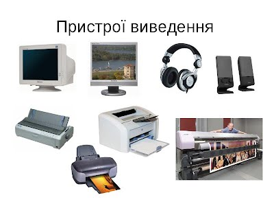
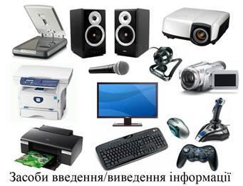
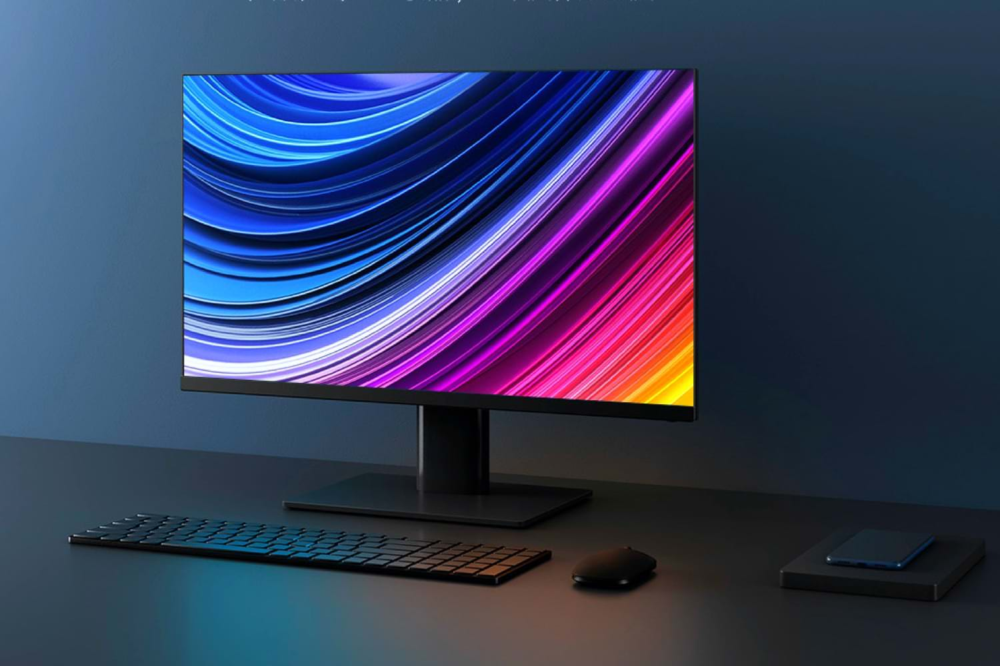
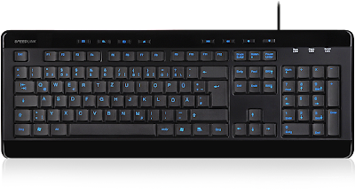

Перефірійні пристрої
- Переферія-це всі пристрої що вводять і виводять інформацію з/в ПК й
підключаються до роз'ємів ПК - миша, клавіатура, мікрофон, навушники, колонки, принтер ,
монітор ,проектор, флешка , камера , модем , мережева картка, CD/DVD привод.


-
Монітор комп'ютера - це пристрій, призначений для виведення на екран текстової та
графічної інформації. На монітор виводиться інформація, отримана в результаті обробки даних,
тобто монітор дозволяє візуалізувати результати роботи програм. Так само монітор надає
можливість візуально бачити дані, які вводяться, і керувати роботою програм.

-
Комп'ютерна клавіатура — це пристрій для введення або виведення інформації. Введення
здійснюється через звернення до операцій, що проводяться в процесорі і інструкції на
екрані. Виведення відбувається, як правило, на додатково підключаються пристрої, такі
як принтери, копіри, сканери, флеш-накопичувачі. Клавіатура має стандартно розташовані
101 або 102 кнопки. В залежності від моделі і виробника можуть бути включені і додаткові,
які виконують певні функції.
